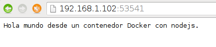

Continuando con los artículos sobre Docker.
En este caso se explicará como montar y usar Dokku el cual es una herramienta que facilita montar una Plataforma como Servicio (PaaS) al estilo Heroku en Linux (en este caso Debian Jessie).
Para este caso no se tiene un servidor de DNS y un nombre al equipo, se usará la IP 192.168.1.102.
Los artículos anteriores sobre docker son:
1. Instalar Docker en Debian Jessie
-
Iniciando Django con docker usando docker-compose con postgresql como microservicio.
-
Crear un entorno de Integración y Despligue continue con Docker para node.js.
-
Ejecutar una prueba de unittest en Python con un contenedor Docker.
Para instalar y usar Dokku estaré trabajando con una máquina virtual (para no usar directamente mí equipo), para ello se instalo en dicha máquina virtual docker (ver artículo 1).
El procedimiento de instalación de Dokku lo pueden encontrar en su proyecto en github o en el siguiente enlace.
Instalación (para este procedimiento se instala docker-engine):
wget https://raw.githubusercontent.com/dokku/dokku/v0.5.6/bootstrap.sh
chmod a+x bootstrap.sh
sudo DOKKU_TAG=v0.5.6 bash bootstrap.sh
Otra opción para instalar es bajarse el repositorio de dokku:
git clone https://github.com/progrium/dokku.git
cd dokku
sudo make install ; #es necesario tener make instalado; sudo apt-get install make
Para ver que versión se tiene:
dokku version
v0.5.6-7-g851ca59
Configurar la llave ssh:
1. Ir a la máquina local, ir al directorio .ssh, si no se tiene una llave RSA generada, se genera una:
cd .ssh
ssh-keygen -t rsa
- Ver la llave pública:
cat id_rsa.pub
- Se copia el contenido de la llave.
- En el servidor, como un usuario se ejecuta lo siguiente:
echo "ssh-rsa ..... ernesto@crespo.org.ve"| sudo sshcommand acl-add dokku ernesto
Subir una aplicación de node.js y express.js:
Para ello se tiene un repositorio github con una aplicación en node.js y express.js que tiene una página con un hola mundo.
Se clonan el repo (desde el equipo local):
git clone https://github.com/ecrespo/prueba-nodeexpress.git
La estructura de archivos y directorios son:
prueba-nodeexpress/
├── app.json
├── index.js
├── LICENSE
└── package.json
En el siguiente enlace se tiene el repositorio de github.
Se agrega el repo remoto de dokku (192.168.1.102):
git remote add dokku dokku@192.168.1.102:prueba-nodeexpress
Se modifica el archivo index.html, y se sube al repositorio de dokku:
git add public/index.html
git commit -m"Agregado texto"
git push dokku master
Al hacer push se tiene la siguiente salida:
....
-----> Discovering process types
Default types for -> web
-----> Releasing prueba-nodeexpress (dokku/prueba-nodeexpress:latest)...
-----> Deploying prueba-nodeexpress (dokku/prueba-nodeexpress:latest)...
-----> Attempting to run scripts.dokku.predeploy from app.json (if defined)
-----> App Procfile file found (/home/dokku/prueba-nodeexpress/DOKKU_PROCFILE)
-----> DOKKU_SCALE file not found in app image. Generating one based on Procfile...
-----> New DOKKU_SCALE file generated
=====> web=1
-----> Running pre-flight checks
For more efficient zero downtime deployments, create a file CHECKS.
See http://dokku.viewdocs.io/dokku/checks-examples.md for examples
CHECKS file not found in container: Running simple container check...
-----> Waiting for 10 seconds ...
-----> Default container check successful!
-----> Running post-deploy
-----> Attempting to run scripts.dokku.postdeploy from app.json (if defined)
=====> renaming container (2dacd928c2bb) clever_tesla to prueba-nodeexpress.web.1
=====> no global VHOST set. disabling vhost support
-----> Setting config vars
NO_VHOST: 1
-----> no nginx port set. setting to random open high port
-----> Setting config vars
DOKKU_NGINX_PORT: 53541
-----> Creating http nginx.conf
-----> Running nginx-pre-reload
Reloading nginx
-----> Setting config vars
DOKKU_APP_RESTORE: 1
=====> Application deployed:
http://192.168.1.102:53541 (nginx)
To dokku@192.168.1.102:prueba-nodeexpress
* [new branch] master -> master
Al abrir el navegador en http://192.168.1.102:53541 se tiene lo siguiente:

Para la instalación de plugins se puede revisar el siguiente enlace.
Existen otras herramientas parecidas a dokku:
De esta forma se hace una pequeña demostración de como tener un entorno de despliegue parecido a Heroku.
¡Haz tu donativo! Si te gustó el artículo puedes realizar un donativo con Bitcoin (BTC) usando la billetera digital de tu preferencia a la siguiente dirección: 17MtNybhdkA9GV3UNS6BTwPcuhjXoPrSzV
O Escaneando el código QR desde la billetera:

Comments !